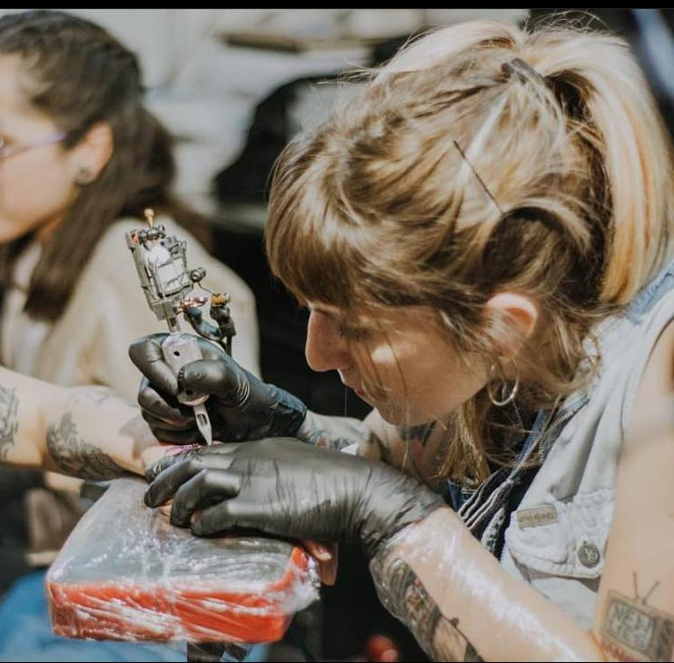
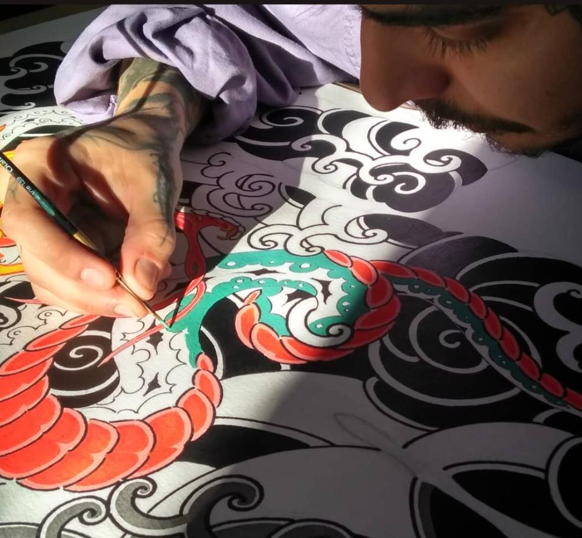

Ludmila Enriquez
Empecé tatuándome a mi misma, me acerque a algunos estudios y conocí a varios artistas, fui aprendiz aquí y allá, descubriendo así los diferentes estilos de tatuajes, en especial del neotradi me llamó la atención por el manejo de texturas y la forma de sintetizar del tradicional y neotradicional. Algunos lo definen como neotradi, a mí me gusta decir que mi trabajo está basado en texturas y puntos, lo cual le da un toque oscuro al tatuaje, logrando así imágenes que permanecen. Siempre con la convicción de que tatuar es lo único que quiero hacer.
Robert Gaitan
Dedicado al arte del tatuaje con más de 10 años de experiencia con estudios de diseño gráfico y un marcado gusto por la ilustración. En lo que a tatuaje respecta, el New School fue lo que más me atrajo, pues era lo que más se acercaba a los patrones estéticos que tenía, pero en el proceso comencé a entender más el tradicional, y hoy en día hago una interpretación de los elementos estéticos que me gustan a estos estilos, neotradicional y tradicional, pues creo que sus características son los más adecuadas para cubrir los aspectos que considero más importantes del tatuaje: fuerza, legibilidad y perdurabilidad.
Jamaica Priscila
Me apasiona el tradi, pero no me gusta encasillarme en un solo estilo, es por eso que muchos de mis tatuajes expresan las ideas de cada cliente a todo color. Me gustan los diseños clásicos y los tatuajes tradicionales, me interesa conocer el significado que tiene para cada cliente su diseño, siento que conociendo esa idea puedes hacer que cada detalle cuente desde un tatuaje pequeño hasta uno más grande. Me gustan las temáticas de animales, caricaturas, cultura pop 90’s, videojuegos influenciados en el estilo neotradicional, tradicional y un poco de japonés.